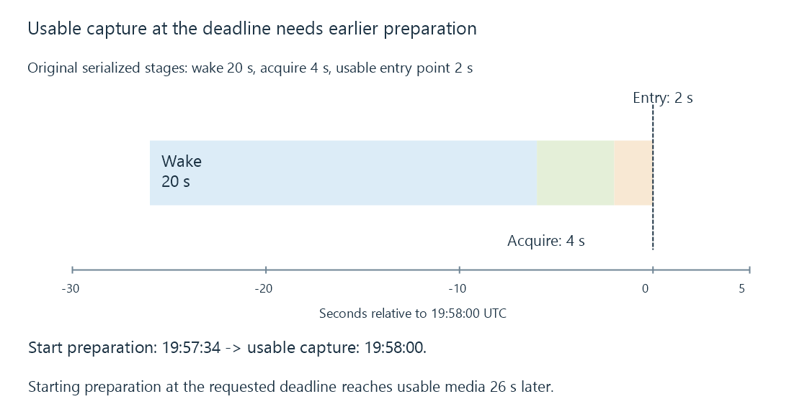

Recording timers and acquisition deadlines
A recording timer retains a selected channel, intended time interval and recording options so the server can attempt acquisition at the required deadline.
A recording timer is a saved request to acquire a particular source during a particular interval. It contains more intent than an alarm that rings when the guide’s programme begins.
The server needs to know what to open, when usable capture should start and end, and which options apply to that request.
The requested interval includes margins
Use this original same-date UTC descriptor:
{
"channel": "A/news-main",
"airing": "P/airing/A100",
"programmeStart": "2026-10-12T20:00:00Z",
"programmeEnd": "2026-10-12T21:00:00Z",
"prePaddingSeconds": 120,
"postPaddingSeconds": 300
}
The nominal programme lasts sixty minutes. Subtracting the pre-padding and adding the post-padding gives a requested capture interval of 19:58–21:05, lasting sixty-seven minutes.
This is an explanatory descriptor. Emby’s public TimerInfo contract has its own channel/programme IDs, UTC date fields and padding properties.
The programme association supplies useful descriptions and identity. The source selection must still resolve to the intended service.
An acquisition command is not the first usable picture
Suppose the request says usable capture should begin at 19:58:00. In a separate original startup model, waking takes twenty seconds, source acquisition takes four and the first usable media entry point takes two.
If all three stages are serialized, they require twenty-six seconds. Beginning preparation at 19:57:34 reaches the modeled usable point at 19:58:00.
Beginning those stages at 19:58:00 reaches it at 19:58:26 instead. The clock alarm was on time, but the requested first twenty-six seconds were not yet available to write.

These times are declared teaching inputs. A real implementation may keep a source warm, perform some work concurrently or use another preparation strategy.
The distinction still matters: a scheduled start, a source-open attempt and the first useful captured packet are different observations.
A manual timer has different update intent
A request created from a guide programme can retain that programme association. A manual request can specify a channel and interval without programme information.
Emby’s developer documentation explicitly allows missing programme information for timers. A client displaying them therefore needs the saved interval and channel even when no programme object is available.
A moved guide event creates another policy question. Should the request follow the associated programme or preserve the explicit interval? Schedule changes develops the consequences without assuming one universal answer.
A series rule is different again: it can generate many individual timers as future matching airings become known.
Persisting intent does not guarantee execution
The saved timer can survive longer than an application screen, but capture still needs a running scheduler, usable source and writable destination at the deadline.
Emby documents an option to wake the server for scheduled recordings. Whether that succeeds also depends on the machine and platform’s supported wake path. The setting alone is not evidence that a particular sleeping server resumed.
When a start is missed, distinguish three times: the requested capture start, the scheduler’s actual attempt and the first usable stored media. A late attempt and an on-time attempt with slow acquisition have different causes, even if both produce a short recording.
See Also
- Programme schedule changes and recording plans
- Recording padding and programme coverage
- Recording conflicts and feasible resource assignments
- Guide time zones and clock changes